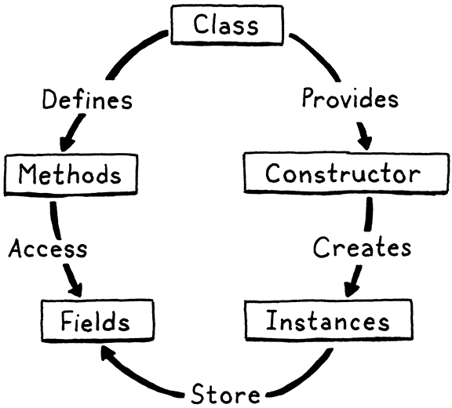

Practical Compiler Design
Implimenting jlox
Whoami
- Sreedeep CV A.K.A Cripto
- wannabe reverse engineer
- Compiler Designer
- student
Lox basics
- Lox is dynamically typed
- does automatic memory management
- Object-oriented
-
declare variables using var statements
print “Hello lox” ;
var a = “lox string” ;
var breakfast = "beignets";
var beverage = "cafe au lait";
breakfast = "beignets with " + beverage;
print breakfast;
Datatypes
- Boolian
- Numbers
- Strings
- Nil
Example:
true;
false;
1234; // An integer.
12.34; // A decimal number
"I am a string";
""; // The empty string.
"123"; // This is a string, not a number.
nil
Control Flow
- If -else
- while loops
var i = 0;
while(8>i)
{
print "Hello";
i = i+1;
}
- For loop
var sum = 0;
for(var i=0;i<101;i=i+1)
{
sum = sum +i;
}
print sum ;
GRAMMAR
Each rule is a name, followed by an arrow (→), followed by a sequence of symbols, and finally ending with a semicolon (;).
breakfast → protein "with" breakfast "on the side" ;
breakfast → protein ;
breakfast → bread ;
protein → crispiness "crispy" "bacon" ;
protein → "sausage" ;
protein → cooked "eggs" ;
crispiness → "really" ;
crispiness → "really" crispiness ;
cooked → "scrambled" ;
cooked → "poached" ;
cooked → "fried" ;
bread → "toast" ;
bread → "biscuits" ;
bread → "English muffin" ;

- Literals. Numbers, strings, Booleans, and nil.
- Unary expressions. A prefix ! to perform a logical not, and - to negate a number.
- Binary expressions. The infix arithmetic (+, -, *, /) and logic operators (==, !=, <, <=, >, >=) we know and love.
- Parentheses A pair of ( and ) wrapped around an expression.
expression → literal
| unary
| binary
| grouping ;
literal → NUMBER | STRING | "true" | "false" | "nil" ;
grouping → "(" expression ")" ;
unary → ( "-" | "!" ) expression ;
binary → expression operator expression ;
operator → "==" | "!=" | "<" | "<=" | ">" | ">="
| "+" | "-" | "*" | "/" ;
Scanner
scan through the list of characters and group them together into the smallest sequences that still represent something. Each of these blobs of characters is called a lexeme.
package com.craftinginterpreters.lox;
import java.util.ArrayList;
import java.util.HashMap;
import java.util.List;
import java.util.Map;
import static com.craftinginterpreters.lox.TokenType.*;
class Scanner {
private final String source;
private final List tokens = new ArrayList<>();
Scanner(String source) {
this.source = source;
}
}
Keywords
We define the set of reserved words in a map.
private static final Map keywords;
static {
keywords = new HashMap<>();
keywords.put("and", AND);
keywords.put("class", CLASS);
keywords.put("else", ELSE);
keywords.put("false", FALSE);
keywords.put("for", FOR);
keywords.put("fun", FUN);
keywords.put("if", IF);
keywords.put("nil", NIL);
keywords.put("or", OR);
keywords.put("print", PRINT);
keywords.put("return", RETURN);
keywords.put("super", SUPER);
keywords.put("this", THIS);
keywords.put("true", TRUE);
keywords.put("var", VAR);
keywords.put("while", WHILE);
}
Parser
parser is a literal translation of the grammar rules straight into imperative code. Each rule becomes a function. The body of the rule translates to code
- Each rule produces a syntax tree and return it to the caller
- There are lots of similarity with scanner here we use tokens instead of lexemes
Recursive descent parser
A recursive descent parser is a literal translation of the grammar’s rules straight into imperative code. Each rule becomes a function. The body of the rule translates to code roughly like:
| Grammar notation | Code representation |
|---|---|
| Terminal | Code to match and consume a token |
| Nonterminal | Call to that rule’s function |
| | | if or switch statement |
| * or + | while or for loop |
| ? | if statement |
EVALUATING EXPRESSIONS
- Create Interpreter class which implements Expr and Stmt (visitor class)
- literal lokens are converted into a literal tree syntax node by parser .Now interpreter convert that into runtime value
- Interpreter do postorder tree traversal
Function
- Setup call method to make function call(parser)
- Finish call method to check for arguments
- Interpret function call (visitCallExpr)
- Crate loxCallable interface
funDecl → "fun" function ;
function → IDENTIFIER "(" parameters? ")" block ;
parameters → IDENTIFIER ( "," IDENTIFIER )* ;
Classes
1.Exposes a constructor to create and initialize new instances of the class
2.Provides a way to store and access fields on instances
3.Defines a set of methods shared by all instances of the class that operate on each instances’ state
private Stmt classDeclaration() {
Token name = consume(IDENTIFIER, "Expect class name.");
consume(LEFT_BRACE, "Expect '{' before class body.");
List methods = new ArrayList<>();
while (!check(RIGHT_BRACE) && !isAtEnd()) {
methods.add(function("method"));
}
consume(RIGHT_BRACE, "Expect '}' after class body.");
return new Stmt.Class(name, methods);
}
Inheritance
class Doughnut {
cook() {
print "Fry until golden brown.";
}
}
class BostonCream < Doughnut {
cook() {
super.cook();
print "Pipe full of custard and coat with chocolate.";
}
}
BostonCream().cook();
Fry until golden brown.
Pipe full of custard and coat with chocolate
using super keyword

- tokens and lexing,
- abstract syntax trees,
- recursive descent parsing,
- prefix and infix expressions,
- runtime representation of objects,
- interpreting code using the Visitor pattern,
- lexical scope,
- environment chains for storing variables,
- control flow,
- closures,
- classes,
- methods, and finally,
- inheritance.